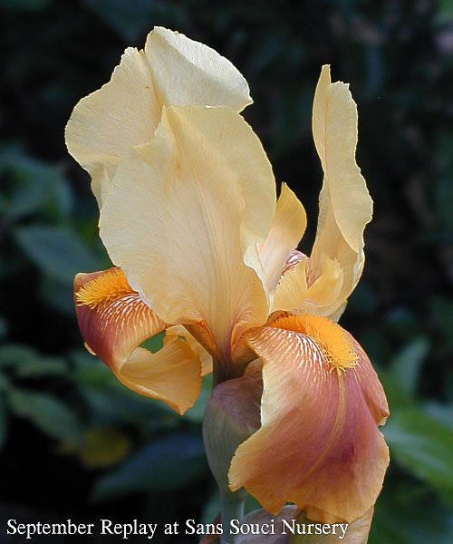
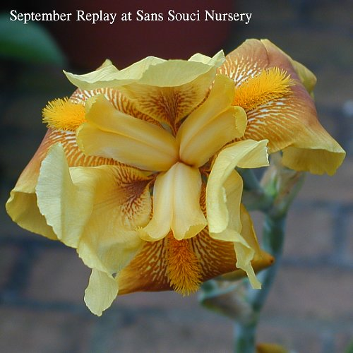

|
Back to TB Master Page
- Height: 30in (76cm)
- Season: ,"E
- Reblooms: August through October
- Description:
This usual iris has standards of a lightly frilled golden tan and white falls
with a background with darker cinnamon overlay & golden markings, and a brown
midline. There is an orange beard. It has a pronounced spicy fragrance. It is
an excellent grower with a reliable rebloom in August through October.
Sans Souci Nursery, LLC
Specializing In Irises
3819 Beatty Road
Monkton, Maryland 21111
Phone :(410) 557-0250
E-Mail:lbh0251@msn.com
© 2004 Sans Souci Nursery . This image may only be used and/or reproduced by written permission of \
Sans Souci Nursery.
Webpage and catalogue production by BATW Web Services
|